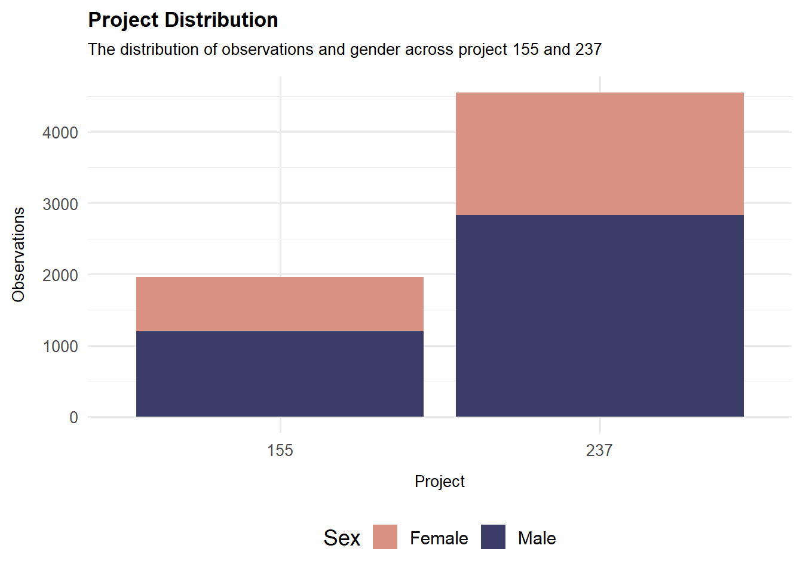
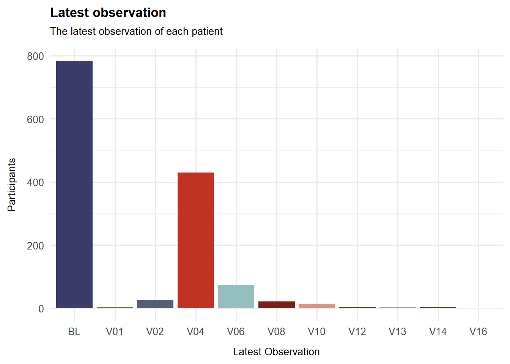
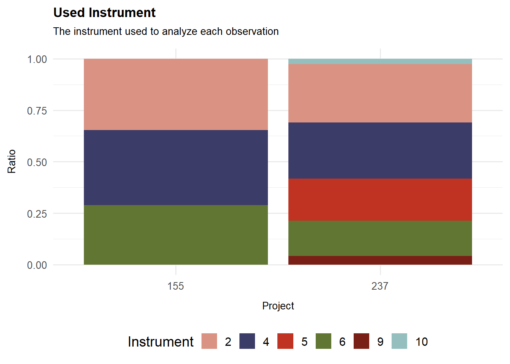
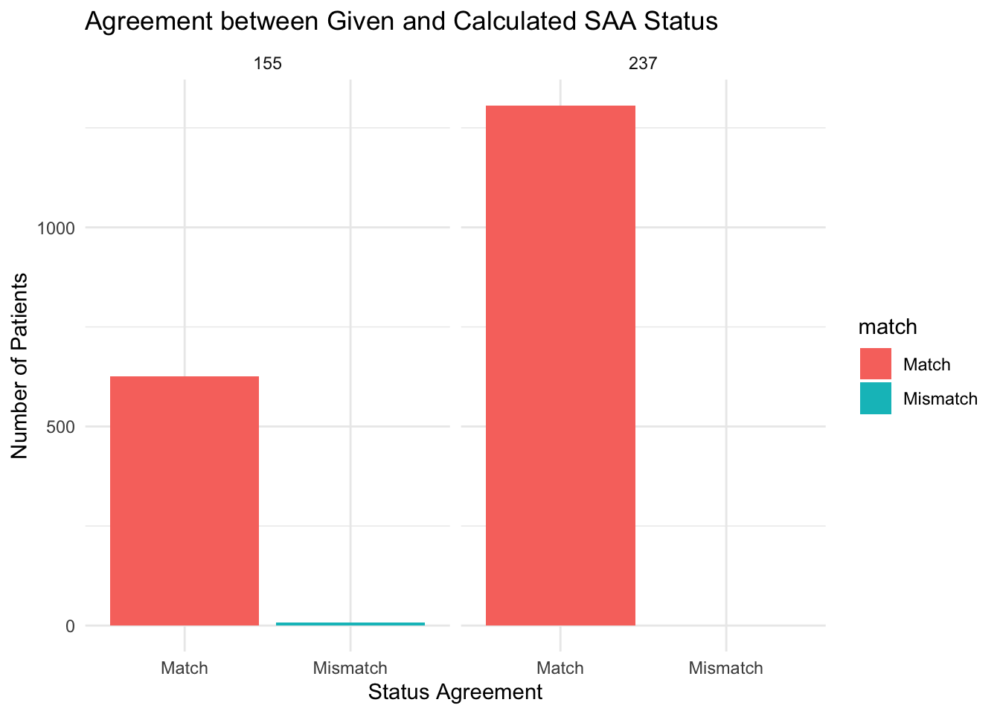
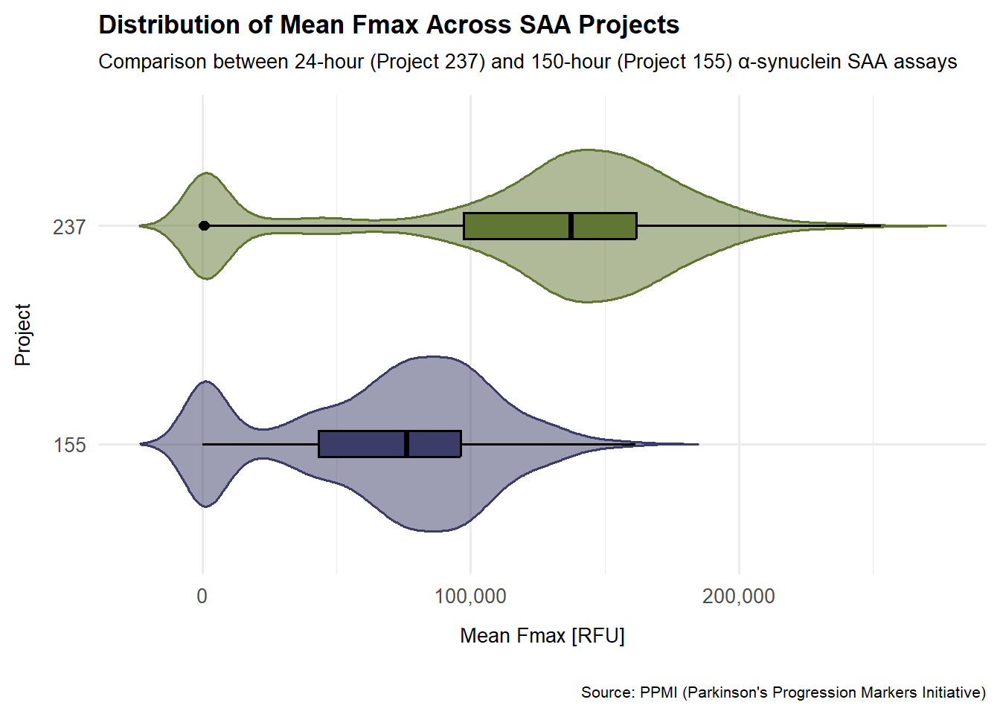
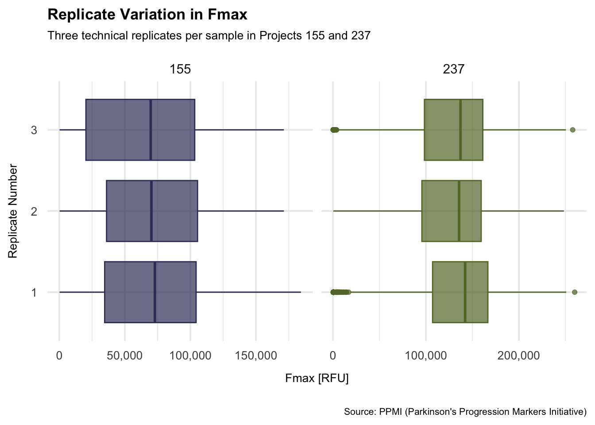
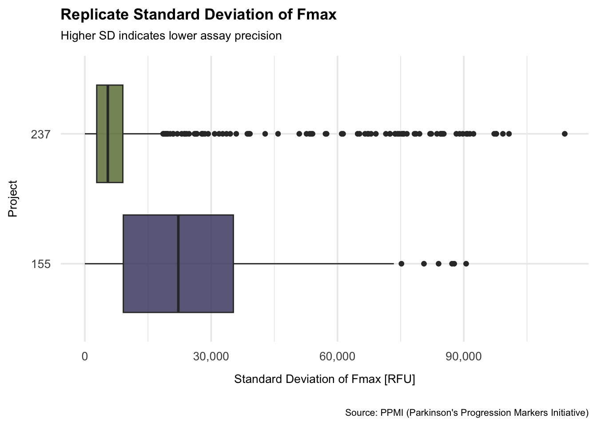
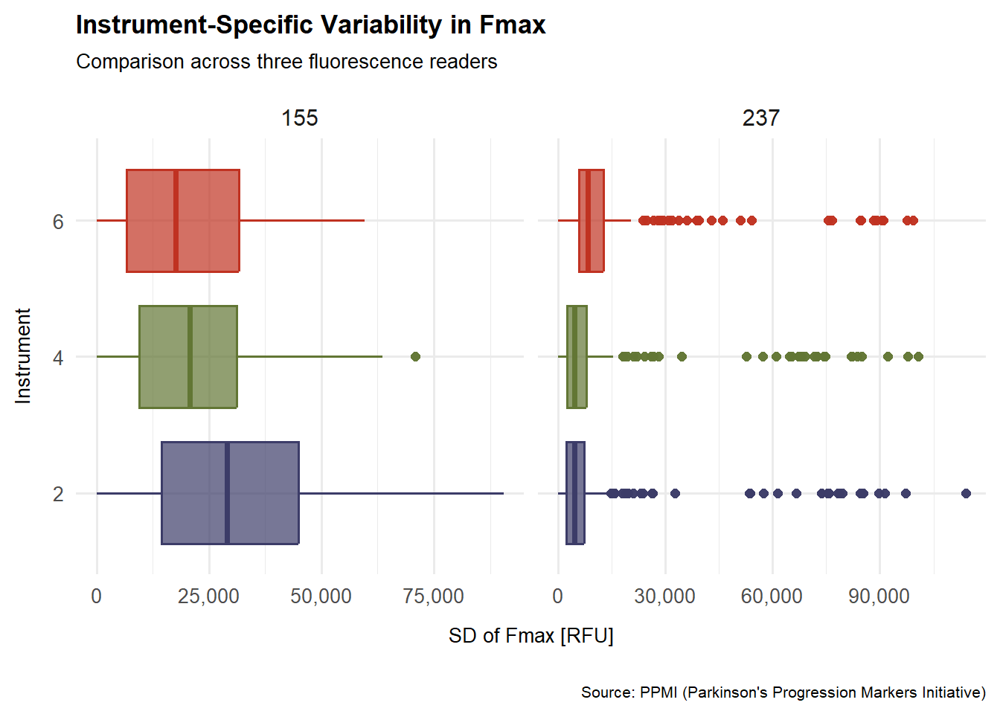
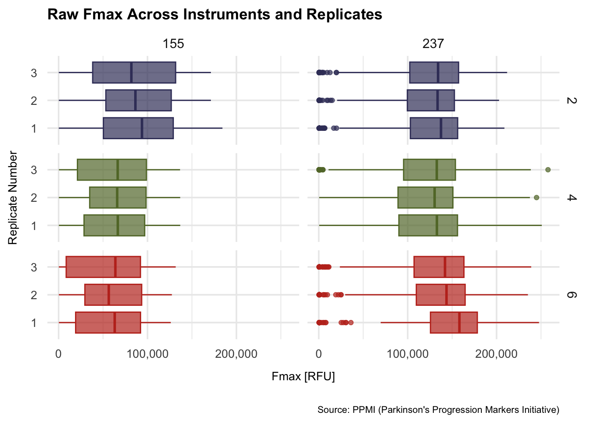

library("tidyverse")00_all
01_load
raw_data <- read_csv("../data/_raw/SAA_Biospecimen_Analysis_Results_01Nov2025.csv")write_tsv(raw_data, "../data/01_dat_load.tsv")02_clean
library(tidyverse)Loading the raw data
raw_data <- read_tsv("../data/01_dat_load.tsv")
raw_data |>
slice_sample(n = 10)# A tibble: 10 × 48
PATNO SEX COHORT CLINICAL_EVENT TYPE SAAMethod SAA_Status SAA_Type
<dbl> <chr> <chr> <chr> <chr> <chr> <chr> <chr>
1 3708 Male PD BL Cerebrospi… Amprion-… Positive Type1
2 170481 Female PD BL Cerebrospi… Amprion-… Positive Type1
3 3415 Male PD BL Cerebrospi… Amprion-… Positive <NA>
4 221809 Male PD BL Cerebrospi… Amprion-… Negative <NA>
5 40713 Female PD BL Cerebrospi… Amprion-… Negative <NA>
6 3319 Male SWEDD BL Cerebrospi… Amprion-… Inconclus… <NA>
7 3825 Male PD V04 Cerebrospi… Amprion-… Positive Undeter…
8 229722 Female PD BL Cerebrospi… Amprion-… Positive Type1
9 70463 Male PD BL Cerebrospi… Amprion-… Positive <NA>
10 4106 Male PD BL Cerebrospi… Amprion-… Positive Type1
# ℹ 40 more variables: Fmax_24h_Rep1 <dbl>, Fmax_24h_Rep2 <dbl>,
# Fmax_24h_Rep3 <dbl>, TTT_24h_Rep1 <dbl>, TTT_24h_Rep2 <dbl>,
# TTT_24h_Rep3 <dbl>, AUC_24h_Rep1 <dbl>, AUC_24h_Rep2 <dbl>,
# AUC_24h_Rep3 <dbl>, TSmax_24h_Rep1 <dbl>, TSmax_24h_Rep2 <dbl>,
# TSmax_24h_Rep3 <dbl>, SLOPEMax_24h_Rep1 <dbl>, SLOPEMax_24h_Rep2 <dbl>,
# SLOPEMax_24h_Rep3 <dbl>, Fmax_150h_Rep1 <dbl>, Fmax_150h_Rep2 <dbl>,
# Fmax_150h_Rep3 <dbl>, TTT_150h_Rep1 <dbl>, TTT_150h_Rep2 <dbl>, …Clean the data
Deleting columns
Some columns in the data-set are not part of the chosen analytic points. The columns chosen to omit is at the cause are either:
Irrelevant to the analysis such as the name of the institution or the responsible practitioner.
Contain the same value for all observation such as the TYPE (which is always a cerebrospinal fluid sample) and SAAMethod (results always made on the basis of a SAA).
Only have a value in observed in one of the projects: SAA_Type, TSmax, T50.
Lack meassurements for most observations like SampleVolume.
# Neglecting the unused columns:
tidy_data <- raw_data |>
select(-"COHORT",
-"PI_NAME",
-"PI_INSTITUTION",
-"TYPE",
-"SAAMethod",
-"SAA_Type",
-starts_with("TSmax"),
-starts_with("SLOPE"),
-starts_with("T50"),
-starts_with("Sample"))Missing value interpretation
One person (patient_number = 41184) has the value “U01” in the clinical event column. As no information is found explaining the value, the patient is removed from the data.
tidy_data <- tidy_data |>
filter(CLINICAL_EVENT != "U01")Elongating the data
Originally all repetitions of Fmax, TTT and AUC had its own column. To make the data more comprehensible all repetitions are stored in one column for each measurement. The data will then contain only one column of each measurement (Fmax/AUC/TTT), a column with the duration (either 24 or 150 hours) and a column defining the repetition number (1-3) of the measurement.
tidy_data <- tidy_data |>
pivot_longer(
cols = matches("Fmax|TTT|AUC"),
names_to = c("measurement", "duration", "rep"),
names_pattern = ("(Fmax|TTT|AUC)_(\\d+)h_Rep(\\d+)"),
values_to = "value",
values_drop_na = TRUE
) |>
pivot_wider(
names_from = measurement,
values_from = value
)
tidy_data |>
slice_sample(n = 10)# A tibble: 10 × 14
PATNO SEX CLINICAL_EVENT SAA_Status InstrumentRep1 InstrumentRep2
<dbl> <chr> <chr> <chr> <dbl> <dbl>
1 51632 Female V06 Positive 5 5
2 217633 Female BL Positive 9 9
3 51971 Male V04 Positive 6 6
4 57887 Female V04 Negative 4 4
5 4126 Male BL Positive 4 4
6 42351 Male BL Positive 6 6
7 3558 Male BL Positive 2 2
8 4058 Male V04 Positive 5 5
9 3540 Male V04 Positive 2 2
10 3185 Female V12 Negative 5 5
# ℹ 8 more variables: InstrumentRep3 <dbl>, RUNDATE <date>, PROJECTID <dbl>,
# duration <chr>, rep <chr>, Fmax <dbl>, TTT <dbl>, AUC <dbl>Reducing the “Instrument” columns
When looking at the data it seemed that the instrument used for one observation for all three repetitions was the same. We found that it was the case for all observations when checking:
all(tidy_data$InstrumentRep1 == tidy_data$InstrumentRep2 & tidy_data$InstrumentRep2 == tidy_data$InstrumentRep3)[1] TRUETo reduce the number of columns, the instrument is stored in a single column.
tidy_data <- tidy_data |>
select(!InstrumentRep2 & !InstrumentRep3) |>
rename(instrument = InstrumentRep1)Renaming
To get a more clear overview of the data-set some of the names were edited and the naming convention was changed.
tidy_data <- tidy_data |>
rename(
patient_number = PATNO,
sex = SEX,
project = PROJECTID,
clinical_event = CLINICAL_EVENT,
saa_result = SAA_Status,
rundate = RUNDATE,
fmax = Fmax,
ttt = TTT,
auc = AUC)
tidy_data |>
slice_sample(n = 10)# A tibble: 10 × 12
patient_number sex clinical_event saa_result instrument rundate project
<dbl> <chr> <chr> <chr> <dbl> <date> <dbl>
1 3105 Male V10 Positive 5 2025-05-29 237
2 41293 Male BL Positive 4 2022-05-26 155
3 243029 Female BL Negative 10 2024-04-30 237
4 324862 Male BL Positive 2 2024-07-18 237
5 100738 Female BL Positive 5 2024-12-10 237
6 40707 Female BL Negative 2 2022-05-05 155
7 3407 Male BL Positive 4 2022-05-12 155
8 3451 Male V04 Negative 2 2023-12-18 237
9 182984 Female BL Positive 2 2023-09-29 237
10 211536 Male BL Positive 4 2024-04-30 237
# ℹ 5 more variables: duration <chr>, rep <chr>, fmax <dbl>, ttt <dbl>,
# auc <dbl>Changing the column-types
For further analysis the column-type was changed to ensure correct plotting.
tidy_data <- tidy_data |>
mutate(across(c(project,
duration,
rep,
instrument),
as.character))
tidy_data |>
slice_sample(n = 10)# A tibble: 10 × 12
patient_number sex clinical_event saa_result instrument rundate project
<dbl> <chr> <chr> <chr> <chr> <date> <chr>
1 41401 Female V04 Positive 4 2023-12-18 237
2 172413 Male BL Positive 2 2023-08-17 237
3 3360 Male BL Positive 6 2022-03-17 155
4 40585 Male V04 Positive 4 2023-12-18 237
5 3105 Male BL Inconclus… 4 2022-03-17 155
6 195159 Male V06 Positive 6 2025-05-28 237
7 42407 Female V08 Positive 5 2024-10-28 237
8 3701 Male BL Positive 6 2022-05-05 155
9 40754 Female V12 Positive 2 2022-05-05 155
10 3865 Male V02 Negative 4 2023-01-03 237
# ℹ 5 more variables: duration <chr>, rep <chr>, fmax <dbl>, ttt <dbl>,
# auc <dbl>Relocating columns
The columns containing important information about an observation was moved to the front.
tidy_data <- tidy_data |>
relocate(project)
tidy_data <- tidy_data |>
relocate(duration:auc, .after = saa_result)
tidy_data |>
slice_sample(n = 10)# A tibble: 10 × 12
project patient_number sex clinical_event saa_result duration rep fmax
<chr> <dbl> <chr> <chr> <chr> <chr> <chr> <dbl>
1 237 133472 Male BL Positive 24 1 138288
2 155 40800 Male BL Negative 150 1 548
3 237 71189 Male V04 Positive 24 3 127157
4 155 3426 Female BL Negative 150 2 277
5 155 40754 Female V04 Positive 150 1 116169
6 155 40756 Female BL Positive 150 1 130670
7 155 4115 Male BL Positive 150 1 101604
8 155 3529 Male BL Positive 150 1 158260
9 237 170727 Female BL Positive 24 1 164241
10 155 3566 Female BL Negative 150 2 302
# ℹ 4 more variables: ttt <dbl>, auc <dbl>, instrument <chr>, rundate <date>Cluster the patients’ observations
Some patients have multiple observations and uses the patient_number as an identifier. One patients observations are all gathered together by arranging the patient_number and individually put in order depending on their visit.
tidy_data <- tidy_data |>
arrange(patient_number, rundate)Save the cleaned data
write_tsv(tidy_data, "../data/02_dat_clean.tsv")03_augment
library(tidyverse)Loading the clean data
tidy_data <- read_tsv("../data/02_dat_clean.tsv")Augment Data
Finding days from baseline
Some patients were tested multiple times at different dates. We calculate the days from baseline and add a colum with this information.
It should be noted that for 2 patients (40771 and 40754) the rundate appears to have been inputted wrong, so that it appears as if several samples were taken on just one day, despite them having different clinical_events. Therefore, it is insufficient to just sort by days_from_baseline, and clinical_events is therefore kept.
tidy_data <- tidy_data |>
mutate(rundate = as.Date(rundate)) |>
group_by(patient_number) |>
mutate(days_from_baseline = as.numeric(rundate - min(rundate, na.rm = TRUE))) |>
ungroup()Calculating means of Fmax, ttt and auc
Instead of working with three replicates of a single observation, moving forward the mean of the variable will be used to represent the observation.
The means are calculated of Fmax, ttt and auc from a single patient (patient_number) per visit (clinical_event).
means <- tidy_data |>
group_by(patient_number, clinical_event, days_from_baseline) |>
summarise(
fmax_mean = mean(fmax, na.rm = TRUE),
ttt_mean = mean(ttt, na.rm = TRUE),
auc_mean = mean(auc, na.rm = TRUE),
.groups = "drop"
)
# Adding the means to the dataset
aug_data <- tidy_data |>
left_join(means,
by = c("patient_number",
"clinical_event",
"days_from_baseline"))Performing a quality check
When PPMI performed their study, they choose a criteria the Fmax value must meet, for the SAA-result to indicate PD. The indication of PD is stored in the saa_result column as either positive, negative or inconclusive. To ensure they correctly assigned the saa_results to the observations, a quality check is made.
As the two projects differ in method, they used different requirements for each. The requirements used can be seen in the table below:
| Result | Project 155 - Criteria of Fmax |
| Positive | All 3 replicates have Fmax ≥ 5,000 RFU |
| Negative | 0 or 1 replicate has Fmax ≥ 5,000 RFU |
| Inconclusive | Exactly 2 replicates have Fmax ≥ 5,000 RFU |
| Result | Project 237 - Criteria of Fmax |
|---|---|
| Positive |
|
| Negative |
|
| Inconclusive |
|
Prepare replicate vectors for SAA rule
reps <- tidy_data |>
group_by(patient_number, project, clinical_event, days_from_baseline) |>
summarise(
fmax_reps = list(fmax),
.groups = "drop"
)
aug_data <- aug_data |>
left_join(reps,
by = c("patient_number",
"project",
"clinical_event",
"days_from_baseline"))We prepare to calculate the status from the fmax values by first creating two functions with the rules:
saa_rule_155 <- function(x) {
x <- unlist(x)
n_pos <- sum(x >= 5000, na.rm = TRUE)
case_when(
n_pos == 3 ~ "Positive",
n_pos <= 1 ~ "Negative",
n_pos == 2 ~ "Inconclusive",
TRUE ~ NA_character_
)
}
saa_rule_237 <- function(x) {
x <- unlist(x)
n_ge_45000 <- sum(x >= 45000, na.rm = TRUE)
n_ge_3000 <- sum(x >= 3000, na.rm = TRUE)
n_between <- sum(x >= 3000 & x < 45000, na.rm = TRUE)
n_lt_3000 <- sum(x < 3000, na.rm = TRUE)
# Positive
if (n_ge_45000 == 3) return("Positive")
if (n_between == 2 | n_between == 3) return("Positive")
if (n_ge_45000 == 2 & n_between == 1) return("Positive")
# Negative
if (n_ge_3000 <= 1) return("Negative")
# Inconclusive
if (length(x<3)) return("Inconclusive")
if (n_ge_45000 == 2 & n_lt_3000 == 1) return("Inconclusive")
if (n_ge_45000 == 1 & n_between == 1 & n_lt_3000 == 1) return("Inconclusive")
NA_character_
}
Applying the functions and subsequently removing the generated fmax_reps column.
aug_data <- aug_data |>
rowwise() |>
mutate(
saa_custom = case_when(
project == "155" ~ saa_rule_155(fmax_reps),
project == "237" ~ saa_rule_237(fmax_reps),
TRUE ~ NA_character_
)
) |>
ungroup()
aug_data <- aug_data |>
select(-fmax_reps)which(is.na(aug_data$saa_custom))integer(0)aug_data |>
count(saa_custom)# A tibble: 3 × 2
saa_custom n
<chr> <int>
1 Inconclusive 191
2 Negative 1083
3 Positive 5241aug_data |>
count(saa_result)# A tibble: 3 × 2
saa_result n
<chr> <int>
1 Inconclusive 164
2 Negative 1110
3 Positive 5241all(aug_data$saa_result == aug_data$saa_custom)[1] FALSEDeclaring datatype in some columns
aug_data <- aug_data |>
mutate(across(c(project,
duration,
rep,
instrument),
as.character))Save the augmented data
write_tsv(aug_data, "../data/03_aug_data.tsv")04_describe
library(tidyverse)Loading the augmented data
saa_aug_data <- read_tsv("../data/03_aug_data.tsv")Describing the data
To get a better understanding of the data being worked with, some simple descriptive plots will be made.
A general theme has been made:
theme_custom <- theme_minimal(base_size = 14) +
theme(
plot.title = element_text(face = "bold", size = 13, margin = margin(b = 7)),
plot.subtitle = element_text(size = 10, margin = margin(b = 12)),
plot.caption = element_text(size = 8, margin = margin(t = 20)),
axis.title.x = element_text(size = 10, margin = margin(t = 10)),
axis.title.y = element_text(size = 10, margin = margin(r = 10)),
axis.text.x = element_text(size = 10, margin = margin(t = 5)),
axis.text.y = element_text(size = 10, margin = margin(r = 5)),
legend.position = "none",
)knitr::opts_chunk$set(
fig.path = "../results/",
fig.format = "png",
echo = TRUE
)Distribution across projects
The data contains observations made in two projects. The distribution from each projects can be seen in the plot as well as the male/female ratio.
project_distribution <- saa_aug_data |>
mutate(project = as.character(project)) |>
ggplot(mapping = aes(x = project)) +
geom_bar(mapping = aes(fill = sex)) +
scale_fill_manual(values = c("#da9283","#3C3C68"),
name = "Sex") +
theme_custom +
theme(legend.position = "bottom") +
labs(title = "Project Distribution",
subtitle = "The distribution of observations and gender across project 155 and 237",
x = "Project",
y = "Observations")
project_distribution
Individual participants
The data-set orignially contained more than 2000 observations. Some of the patients appear multiple times in the data set. The amount of different patients enrolled in the experiment is determined. Obs: we removed one patient during the cleaning because of a missing value interpretation.
patients_participants <- saa_aug_data |>
distinct(patient_number) |>
summarize(Participants = n())
patients_participants# A tibble: 1 × 1
Participants
<int>
1 1363Patient repeats
The distribution of each patient’s latest experiment was plotted. Most of the data only contains information from the Baseline experiment. If the patients went for further experiments, most of them got the last assessment ~12 months (V04) after their Baseline.
multiple_experiments <- saa_aug_data |>
arrange(desc(days_from_baseline)) |>
distinct(patient_number, .keep_all = TRUE) |>
ggplot(mapping = aes(x = clinical_event)) +
geom_bar() +
theme_custom +
theme(legend.position = "bottom") +
labs(title = "Latest observation",
subtitle = "The latest observation of each patient",
x = "Latest Observation",
y = "Participants")
multiple_experiments
my_cols <- c("#3C3C68","#627634","#545E75","#C03221", "#94BFBE", "#7A1F15",
"#da9283" , "#474B24")saa_aug_data |>
count()# A tibble: 1 × 1
n
<int>
1 6515Result of the SAA
All patients enrolled was diagnosed with PD previously to SAA analysis. The result of the SAA does not follow the PD diagnosis completely. 1363 individual patients are part of augmented data, but only 1160 were determined positive by SAA at their most recent observation.
saa_aug_data |>
arrange(desc(days_from_baseline)) |>
distinct(patient_number, .keep_all = TRUE) |>
filter(saa_result == "Positive") |>
summarize(Positive_individuals = n())# A tibble: 1 × 1
Positive_individuals
<int>
1 1160Use of instrument
To analyse the samples of cerebrospinal fluid in the SAA, different equipment was used.
instruments_used <- saa_aug_data |>
mutate(project = as.character(project)) |>
mutate(instrument = as.character(instrument)) |>
ggplot(mapping = aes(x = project)) +
geom_bar(mapping = aes(fill = instrument),
position = "fill") +
scale_fill_manual(breaks = c("2","4","5","6","9","10"),
values = c("#da9283","#3C3C68","#C03221","#627634","#7A1F15","#94BFBE"),
name = "Instrument",
guide = guide_legend(nrow = 1)) +
theme_custom +
theme(legend.position = "bottom") +
labs(title = "Used Instrument",
subtitle = "The instrument used to analyze each observation",
x = "Project",
y = "Ratio")
instruments_used
05_analysis_1
Load libraries
library(tidyverse)load the augmented data from file:
saa_aug_data <- read_tsv("../data/03_aug_data.tsv")Rows: 6515 Columns: 17
── Column specification ────────────────────────────────────────────────────────
Delimiter: "\t"
chr (4): sex, clinical_event, saa_result, saa_custom
dbl (12): project, patient_number, duration, rep, fmax, ttt, auc, instrumen...
date (1): rundate
ℹ Use `spec()` to retrieve the full column specification for this data.
ℹ Specify the column types or set `show_col_types = FALSE` to quiet this message.# Create a summary table comparing the two status columns
status_comparison <- saa_aug_data %>%
group_by(project, patient_number) %>%
summarise(
given_status = first(saa_result),
calculated_status = first(saa_custom),
match = given_status == calculated_status,
.groups = "drop"
)
# Show mismatches only
status_mismatches <- status_comparison %>%
filter(!match)
status_comparison# A tibble: 1,939 × 5
project patient_number given_status calculated_status match
<dbl> <dbl> <chr> <chr> <lgl>
1 155 3001 Positive Positive TRUE
2 155 3002 Positive Positive TRUE
3 155 3003 Positive Positive TRUE
4 155 3006 Positive Positive TRUE
5 155 3010 Positive Positive TRUE
6 155 3014 Positive Positive TRUE
7 155 3018 Positive Positive TRUE
8 155 3020 Negative Negative TRUE
9 155 3021 Positive Positive TRUE
10 155 3022 Negative Negative TRUE
# ℹ 1,929 more rowsstatus_mismatches# A tibble: 8 × 5
project patient_number given_status calculated_status match
<dbl> <dbl> <chr> <chr> <lgl>
1 155 3285 Negative Inconclusive FALSE
2 155 3426 Negative Inconclusive FALSE
3 155 3473 Negative Inconclusive FALSE
4 155 3581 Negative Inconclusive FALSE
5 155 3753 Negative Inconclusive FALSE
6 155 3972 Negative Inconclusive FALSE
7 155 4121 Negative Inconclusive FALSE
8 155 41749 Negative Inconclusive FALSE# Simple bar plot of agreement
status_comparison %>%
mutate(match = ifelse(match, "Match", "Mismatch")) %>%
ggplot(aes(x = match, fill = match)) +
geom_bar() +
facet_wrap(~ project) +
theme_minimal() +
labs(title = "Agreement between Given and Calculated SAA Status",
x = "Status Agreement",
y = "Number of Patients")
06_analysis_2
library(tidyverse)
aug_data <- read_tsv("../data/03_aug_data.tsv")
aug_data <- aug_data |>
mutate(across(c(project,
duration,
rep,
instrument),
as.character))my_cols <- c("#3C3C68","#627634","#C03221","#545E75", "#94BFBE", "#7A1F15",
"#da9283" , "#474B24")
theme_custom <- theme_minimal(base_size = 14) +
theme(
plot.title = element_text(face = "bold", size = 13, margin = margin(b = 7)),
plot.subtitle = element_text(size = 10, margin = margin(b = 12)),
plot.caption = element_text(size = 8, margin = margin(t = 20)),
axis.title.x = element_text(size = 10, margin = margin(t = 10)),
axis.title.y = element_text(size = 10, margin = margin(r = 10)),
axis.text.x = element_text(size = 10, margin = margin(t = 5)),
axis.text.y = element_text(size = 10, margin = margin(r = 5)),
legend.position = "none",
)knitr::opts_chunk$set(
fig.path = "../results/",
fig.format = "png",
echo = TRUE
)Analysis of Fmax
Seed Amplification Assays (SAA) detect α-synuclein aggregates in cerebrospinal fluid (CSF) and monitors fluorescence intensity over time. The point at which fluorescence reaches its maximum (Fmax) reflects the level of α-synuclein aggregation and is therefore a potential diagnostic indicator for Parkinson’s disease (PD).
The two projects perform the assays under different variables:
Project 155: 150-hour assay, fluorescence measured every 29 minutes
Project 237: 24-hour assay, fluorescence measured every 14 minutes
Variations in assay duration, cycle length, and reaction mixture composition mean that fluorescence values (Fmax) are not directly comparable across projects without normalization. Because assay duration, cycle frequency, and reaction mixture differ between projects, fluorescence values (Fmax) cannot be directly compared without normalizing and looking at variability and protocol-specific characteristics.
The goal of this analysis is therefore to evaluate the precision, consistency, and overall stability of the two assays, including whether instrument differences contribute to variability.
Comparison of Overall Fmax Levels
Project 237 consistently shows higher mean Fmax values than Project 155. This difference is expected: shorter assays accumulate fluorescence more rapidly, while longer assays distribute aggregation over many more cycles, resulting in lower peak values.
p_fmax_mean_dist <- aug_data |>
ggplot(
aes(
x = fmax_mean,
y = project,
color = project,
fill = project
)
) +
geom_violin(alpha = 0.5,
width = 0.8,
trim = FALSE) +
geom_boxplot(width = 0.12,
color = "black",
outlier.alpha = 0.3) +
scale_color_manual(values = my_cols) +
scale_fill_manual(values = my_cols) +
theme_minimal(base_size = 14) +
labs(
title = "Distribution of Mean Fmax Across SAA Projects",
subtitle = "Comparison between 24-hour (Project 237) and 150-hour (Project 155) α-synuclein SAA assays",
x = "Mean Fmax [RFU]",
y = "Project",
caption = "Source: PPMI (Parkinson's Progression Markers Initiative)"
) +
theme_custom +
scale_x_continuous(labels = scales::label_comma())p_fmax_mean_dist
Although absolute values differ, the focus of this analysis is not the magnitude of Fmax but the reproducibility of replicate measurements within each project.
Consistency of Technical Replicates
Distribution of Replicate Fmax Values
Means alone can’t be used to compare the consistency of the two assays. To do this, we will compare Fmax across replicates 1–3 for each project.
p_fmax_by_rep <- ggplot(aug_data, aes(
x = fmax,
y = factor(rep),
color = project,
fill = project
)) +
geom_boxplot(alpha = 0.7) +
facet_wrap(~ project, scales = "free_x") +
scale_color_manual(values = my_cols) +
scale_fill_manual(values = my_cols) +
labs(
title = "Replicate Variation in Fmax",
subtitle = "Three technical replicates per sample in Projects 155 and 237",
x = "Fmax [RFU]",
y = "Replicate Number",
caption = "Source: PPMI (Parkinson's Progression Markers Initiative)"
) +
theme_custom +
theme(legend.position = "none") +
scale_x_continuous(labels = scales::label_comma())p_fmax_by_rep
repeats_fmax_stats <- aug_data |>
ungroup() |>
summarize(mean=mean(fmax),
median=median(fmax),
IQR = quantile(fmax,.75)- quantile(fmax,.25),
.by = c(project, rep))Summary statistics:
| Project | Rep 1 Median | Rep 2 Median | Rep 3 Median | Variation (Range) |
|---|---|---|---|---|
| 155 | 72,926 | 70,262 | 69,721 | 3,205 |
| 237 | 142,138 | 135,570 | 137,200 | 6,568 |
Observations
Project 155: Shows a small, gradual decrease from replicate 1 to 3.
Project 237: Shows a dip in replicate 2, with higher values in replicates 1 and 3.
These patterns are consistent and most likely reflect behavior that is specific for protocol.
Replicate Variability (IQR)
| Project | Rep 1 IQR | Rep 2 IQR | Rep 3 IQR | Variation |
|---|---|---|---|---|
| 155 | ~69,736 | ~69,404 | ~82,973 | 13,569 |
| 237 | ~59,530 | ~63,910 | ~63,179 | 4,380 |
Interpretation
Project 237: shows a more “tight” replicate clustering, indicating greater precision.
Project 155: shows larger and less stable variability, especially in replicate 3.
Replicate Standard Deviation (SD)
Standard deviation (SD) of Fmax across replicates measures stability of the assays.
sd_saa_data <- aug_data |>
group_by(patient_number, rundate) |>
mutate(fmax_sd = sd(fmax))p_sd_by_project <- sd_saa_data |>
filter(instrument %in% c(2, 4, 6)) |>
ggplot(aes(x = fmax_sd,
y = project,
fill = project)) +
geom_boxplot(alpha = 0.8) +
scale_fill_manual(values = my_cols) +
labs(
title = "Replicate Standard Deviation of Fmax",
subtitle = "Higher SD indicates lower assay precision",
x = "Standard Deviation of Fmax [RFU]",
y = "Project",
caption = "Source: PPMI (Parkinson's Progression Markers Initiative)"
) +
theme_custom +
theme(legend.position = "none") +
scale_x_continuous(labels = scales::label_comma())p_sd_by_project
sd_saa_stats <- sd_saa_data |>
ungroup() |>
summarize(min = min(fmax_sd),
mean=mean(fmax_sd),
median=median(fmax_sd),
max=max(fmax_sd),
IQR = quantile(fmax_sd,.75)- quantile(fmax_sd,.25),
.by = project)Summary statistics:
| Project | Mean SD | Median SD | IQR |
|---|---|---|---|
| 155 | 24,066 | 22,198 | 26,131 |
| 237 | 10,386 | 5,662 | 6,470 |
The 150-hour assay (155) has 2–4 times higher replicate variability than the 24-hour assay (237). This is one of the most important quality results in the entire analysis.
Instrument-Specific Variability
We next examined whether any fluorescence reader (instruments 2, 4, 6) contributed disproportionately to the SD.
p_sd_by_instrument <- sd_saa_data |>
filter(instrument %in% c(2,4,6)) |>
ggplot(aes(
x = fmax_sd,
y = instrument,
color = factor(instrument),
fill = factor(instrument)
)) +
geom_boxplot(alpha = 0.7) +
facet_wrap(~ project, scales = "free_x") +
scale_color_manual(values = my_cols) +
scale_fill_manual(values = my_cols) +
labs(
title = "Instrument-Specific Variability in Fmax",
subtitle = "Comparison across three fluorescence readers",
x = "SD of Fmax [RFU]",
y = "Instrument",
caption = "Source: PPMI (Parkinson's Progression Markers Initiative)"
) +
theme_custom +
scale_x_continuous(labels = scales::label_comma())p_sd_by_instrument
sd_instruments_stats <- sd_saa_data |>
ungroup() |>
summarize(mean=mean(fmax_sd),
median=median(fmax_sd),
IQR = quantile(fmax_sd,.75)- quantile(fmax_sd,.25),
.by = c(project, instrument))Instrument-level statistics:
| Project | Instr. | Mean SD | Median SD | IQR |
|---|---|---|---|---|
| 155 | 2 | 30,015 | 28,999 | 30,174 |
| 237 | 2 | 8,384 | 4,482 | 4,953 |
| 155 | 4 | 21,469 | 20,743 | 21,746 |
| 237 | 4 | 8,788 | 4,594 | 5,483 |
| 155 | 6 | 20,190 | 17,562 | 24,950 |
| 237 | 6 | 13,107 | 8,357 | 6,809 |
Interpretation
No single instrument is consistently “worst” or “best.”
Instrument effects depend on the project, indicating interaction between protocol and hardware.
Critically, even the highest SD in Project 237 is lower than the lowest SD in Project 155.
This confirms that protocol (not instrument) is the dominant source of variability.
Raw Fmax by Instruments and Replicates
To visualize replicate patterns across instruments:
p_fmax_raw_rep_inst <- aug_data |>
filter(instrument %in% c(2,4,6)) |>
ggplot(aes(
x = fmax,
y = factor(rep),
color = factor(instrument),
fill = factor(instrument)
)) +
geom_boxplot(alpha = 0.7) +
facet_grid(instrument ~ project) +
scale_color_manual(values = my_cols) +
scale_fill_manual(values = my_cols) +
labs(
title = "Raw Fmax Across Instruments and Replicates",
x = "Fmax [RFU]",
y = "Replicate Number",
caption = "Source: PPMI (Parkinson's Progression Markers Initiative)"
) +
theme_custom +
scale_x_continuous(labels = scales::label_comma())p_fmax_raw_rep_inst
stats_instruments_project <- aug_data |>
ungroup() |>
filter(instrument == 2 | instrument == 4 | instrument == 6) |>
summarize(min = min(fmax),
mean=mean(fmax),
median=median(fmax),
max=max(fmax),
.by = c(project, rep, instrument))Across both projects, either replicate 1 or 3 typically gives the highest Fmax.
This aligns with known SAA behavior:
Rep 1 often initiates early aggregation (“priming”).
Rep 3 often captures stabilized aggregation at late cycles.
Instrument-specific medians confirm these patterns and align with earlier SD/IQR findings.
Instrument 2
| 155 | 237 | |
|---|---|---|
| Median (rep 1) | 93781.0 | 137402.5 |
| Median (rep 2) | 86402.0 | 133614.0 |
| Median (rep 3) | 81850.0 | 134146.0 |
Instrument 4
| 155 | 237 | |
|---|---|---|
| Median (rep 1) | 66598.0 | 132876.0 |
| Median (rep 2) | 65894.5 | 130309.5 |
| Median (rep 3) | 66471.0 | 132749.0 |
instrument 6
| 155 | 237 | |
|---|---|---|
| Median (rep 1) | 63126.0 | 158205.0 |
| Median (rep 2) | 56437.0 | 143678.0 |
| Median (rep 3) | 63862.0 | 141988.0 |
Overall Interpretation
Across all analyses, mean Fmax, replicate medians, IQR, SD, and instrument comparisons, Project 237 shows more precision and replicate reproducibility.
Key conclusions:
Fmax magnitude: Differs between projects due to protocol differences; not directly comparable without normalization.
Replicate variability: Is substantially lower in the 24-hour assay (Project 237).
Standard deviation: Is 2–4 times lower in Project 237, making it markedly more stable.
Instrument effects: Are present but small compared with protocol effects.
Project 155’s 150-hour assay: Shows broad variability and inconsistent replicate behavior, reducing precision.
Summary
Project 237 (24-hour SAA) demonstrates:
Higher Fmax values
Much lower replicate variability
Stronger consistency across instruments
More coherent replicate patterns
Project 155 (150-hour SAA) shows:
Lower Fmax (expected from protocol)
Substantially higher replicate noise
Greater instrument-dependent variation
Overall poorer measurement precision